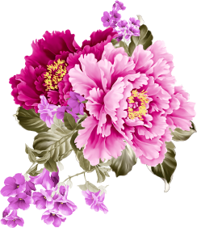

Лучшие букеты
-
 Букет “Радость”Букет из самых красивых цветов в 3-х цветовых решениях
Букет “Радость”Букет из самых красивых цветов в 3-х цветовых решениях -
 Букет “Счастье”Букет из нежных тюльпанов белого и розового цвета
Букет “Счастье”Букет из нежных тюльпанов белого и розового цвета -
 Букет “Вечеринка”Яркий букет из летних цветов для лучшего настроения
Букет “Вечеринка”Яркий букет из летних цветов для лучшего настроения
Цветы цветут повсюду для всех, кто только хочет их видеть.
Сирень распустилась у двери твоей
И лиловыми манит кистями:
О, выйди! Опять любоваться мы ей
Восхищенными будем глазами.
Смотри: гнутся ветви все в пышном цвету,
Как обильны они и пушисты!
Недолго глядеть нам на их красоту
И вдыхать этот запах душистый.

И лиловыми манит кистями:
О, выйди! Опять любоваться мы ей
Восхищенными будем глазами.
Смотри: гнутся ветви все в пышном цвету,
Как обильны они и пушисты!
Недолго глядеть нам на их красоту
И вдыхать этот запах душистый.